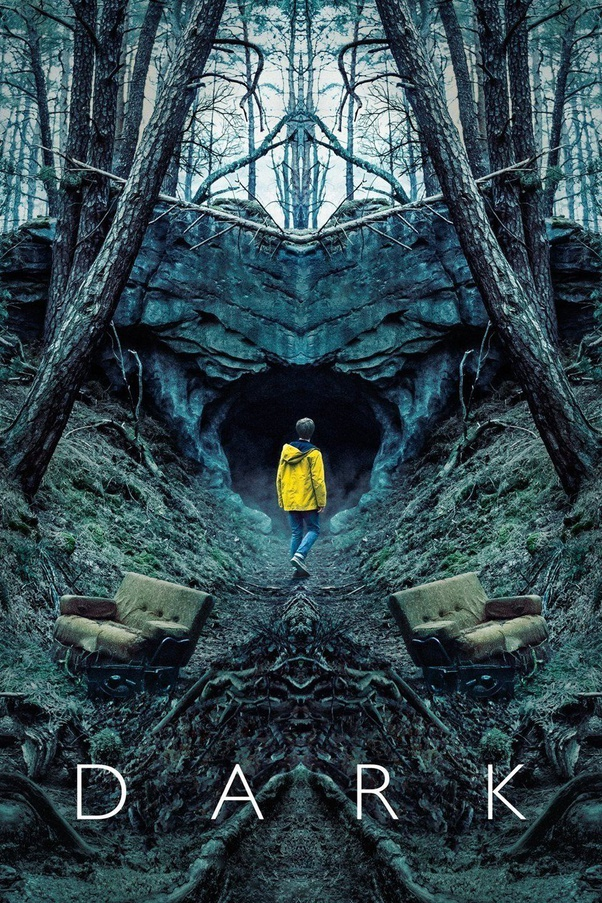

DARK WEBSERIES REVIEW
May 5,2020
 Director Baran bo odar and jantje Friese
Cast: louis Hoffman, Dietrich Hollinderaumer,Dean Lennard Liebrenz, sebastian Rudolph
Netflix’s mesmerizing new German-language series Dark certainly is aptly named.
A great deal of the new 10-episode season takes place in dim rooms and unlit garages,
in an ominously oppressive forest and a shadowy cave, or under sickly, faltering lighting
that suggests a kind of heavy moral decay falling over the world. The series is conceptually
dark, full of cheating spouses, ugly secrets, grotesque killings, and dead birds falling from
the sky in a hail of limp, twisted bodies. But more noticeably, it’s as physically dark as an
early David Fincher movie, and it carries the same level of ominous weight. It’s a series meant
to be watched late at night, with the lights off, experienced like a ghost story around a
campfire that’s burning down to its final embers.
using the space of a 10-hour TV series to establish an entire town of people reacting to a
slow-motion series of personal disasters. In that sense, Dark is closer to the original run of
David Lynch and Mark Frost’s 1990s groundbreaker Twin Peaks, with a steaming nuclear power
plant dominating the town instead of a lumber mill. Dark isn’t just about a murder that comes
with a disturbing tinge of the supernatural. It’s about a community of people,
all with their own problems, and all linked in different ways — both in the present and in the past.
Dark is an ensemble series, but it starts with Ulrich Nielsen (Oliver Masucci), a police officer and
father of three who’s cheating on his wife with a woman whose husband commits suicide in the show’s
earliest moments. Her shell-shocked son, Jonas (Louis Hofmann), is part of a pack of
rangy pack-animal teenagers who venture into the woods outside their small German hometown of Winden,
hunting the drug stash of a classmate who recently disappeared. While they’re out there,
Ulrich’s youngest, Mikkel (Daan Lennard Liebrenz) also disappears, leading the police to wonder
whether someone is targeting local youths. But the disappearances coincide with weird phenomena:
animals dropping dead, lights wildly flickering and flashing. Some of the town’s older residents,
including Mikkel’s grandmother, mutter about how the new disappearances recall older
ones from when they were younger. And a mysterious hooded figure,
looking at a newspaper clip reading “Where is Mikkel?”, crosses out the
first word and rewrites the headline as “When is Mikkel?”
The answer to that first mystery comes by the series’ third episode,
and it raises even more questions — about time travel, official and unofficial cover-ups,
and the roles of various authority figures and outsiders. It also complicates the meaning of smaller
mysteries scattered throughout the show, like the ornately carved box with the suicide victim’s last
letter, which bears a warning not to open it until a specific date and time. There’s a fair bit of
“What’s going on?” in Dark, but the more compelling mystery is “Who knows about it?” It’s another link
to Twin Peaks: that sense that there isn’t a single murderer abroad, so much as a compelling supernatural
mystery, and a web of intrigue around it.
But as with Twin Peaks, Dark is more of a draw for the nightmarish aesthetics,
the sense of swoony horror that hangs over this elaborately drawn little world.
Dark’s characters specially Ulrich isn’t the only one in Winden having an affair. There’s more surreptitious, frustrated lust going on in the
town than honest affection. Winden feels a bit like a soap opera in progress, full of
secrets and lies. A strong cast full of characters who pull off “angst-stricken and unsatisfied”
well contributes to the feeling of an unsettled, untrustworthy world where time-traveling
children or era-hopping murderers just seem par for the course.
About Me

Roll No-Ece 2016/091
Email-crpritamsaha@gmail.com
Mobile-8961783042
Popular Post
Review

Photography